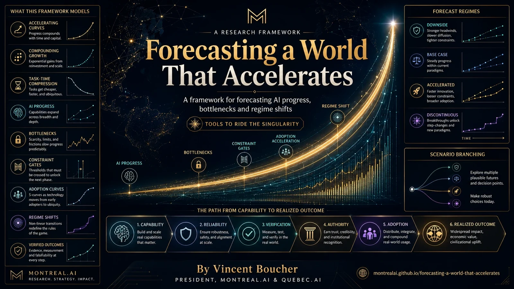

Signal register
TelemetrySource, quality, frequency, threshold and relation to the decision.
Principle
Founded in Montréal · 2003 · Founder-controlled
Decades are executed in months.
The Navigator turns signals, scenarios, constraints, uncertainty and options into governed trajectories. It does not predict one future; it establishes what must be observed, tested, proven, preserved or abandoned.
Forecast less by narrative. Navigate more by evidence.
Navigation framework
A trajectory remains falsifiable. Assumptions, triggers, gates and exit strategies are recorded before narrative certainty takes control.
Navigation objects
The Navigator maintains decision objects, not prophecies: scenario maps, constraint registers, indicators, gates, options and evidence.
Source, quality, frequency, threshold and relation to the decision.
PrincipleAlternative regimes, dependencies, bottlenecks and bifurcations.
PrincipleMinimum evidence, authority, budget, reversibility and stop condition.
PrincipleSmall moves that preserve optionality until evidence arrives.
PrincipleSource traceability
This page synthesizes the records below without converting publication into external validation or production outcome.
GoalOS Singularity Navigator Ω MasterClass: https://montrealai.github.io/goalos-singularity-navigator-omega-agi-club-owner-access/research/GoalOS_Singularity_Navigator_Omega_MasterClass_Tools_to_Ride_the_Singularity_by_Vincent_Bou
Open record →15THE SINGULARITY MAY NOT ARRIVE AS AN EVENT. IT MAY ARRIVE AS A LOOP. And a loop this powerful will require an institution. DeepMind now treats recursive improvement as a plausible AGI→ASI pathway. Anthropic reports that AI is alre
Open record →31THE OPERATING LOOPS OF AUTONOMOUS INTELLIGENCE AI is moving from prompts to persistence: turn-based → goal-based → time-based → proactive. GoalOS adds the missing layer: evaluation, memory, governance, and proof. Not just agents t
Open record →Bring the choice, horizon, scenarios, constraints and available signals. GoalOS will constitute the probes and proof gates.